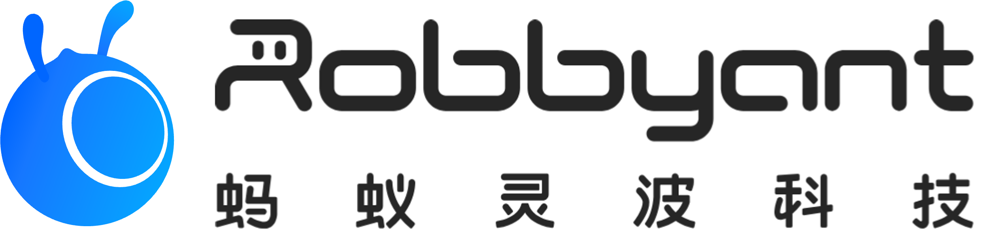

I am a Ph.D. candidate in Computer Science and Engineering at The Hong Kong University of Science and Technology, advised by Prof. Huamin Qu. I am a recipient of the Hong Kong PhD Fellowship Scheme (HKPFS). I received my B.S. in Artificial Intelligence (Honors Class, Qian Xuesen College) from Xi'an Jiaotong University in 2023.
My research focuses on video generation and world models. I am currently a Research Scientist Intern at ByteDance Seed.
Industry Experience
ByteDance Seed
Research Scientist Intern
Led by Haoqi Fan.
NVIDIA Spatial Intelligence Lab
Research Scientist Intern • Santa Clara, California (NVIDIA Headquarters)
Led by Prof. Sanja Fidler.

Ant Research (LingBot)
Research Scientist Intern • World models and video generation
Mentored by Hao Ouyang and Yujun Shen.
News
- 08/2026: Joined ByteDance Seed as a Research Scientist Intern.
- 08/2026: CameraAnything was selected as an ECCV 2026 Spotlight.
- 05/2026: Joined NVIDIA Spatial Intelligence Lab as a Research Scientist Intern at NVIDIA Headquarters.
- 05/2026: Released CausalCine, a real-time autoregressive model for multi-shot video narratives.
- 04/2026: HoloCine was selected as a CVPR 2026 Highlight.
- 01/2026: Released LingBot-World, an open-source world model.
- 09/2025: Dynamic Typography was selected as an ICCV 2025 Best Paper Candidate.
- 06/2025: Two papers were accepted to ICCV 2025; Dynamic Typography was selected for an oral presentation.
- 02/2025: AniDoc was accepted to CVPR 2025.
Selected Publications
Selected Awards
- ICCV Best Paper Candidate2025
- Hong Kong PhD Fellowship Scheme (HKPFS)2023
- RedBird PhD AwardHKUST
- National ScholarshipXJTU · Top 1%
- China Robot CompetitionFirst Prize
Education
The Hong Kong University of Science and Technology
Ph.D. in Computer Science and Engineering
Advisor: Prof. Huamin Qu
Xi'an Jiaotong University
B.S. in Artificial Intelligence · Honors Class, Qian Xuesen College
GPA Rank: Top 1% · National Scholarship